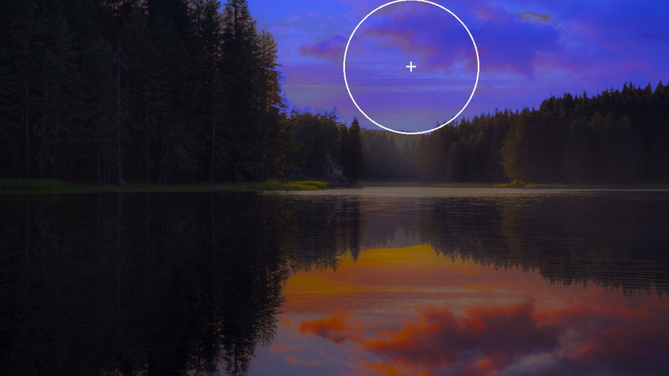
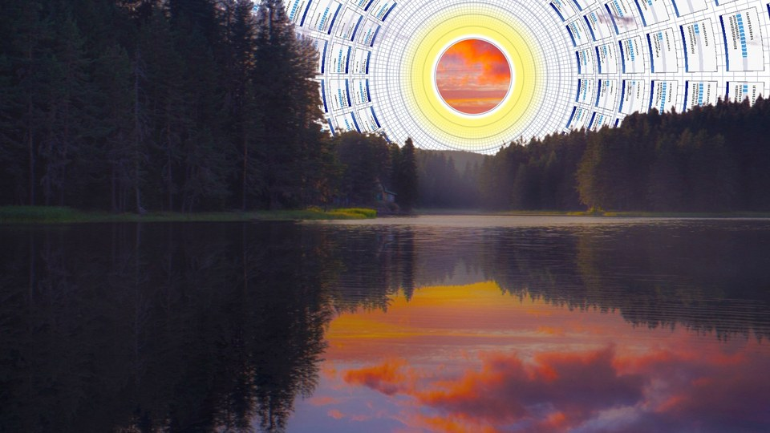
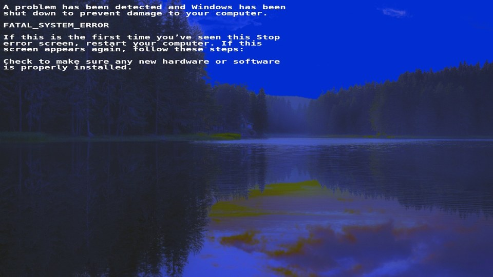
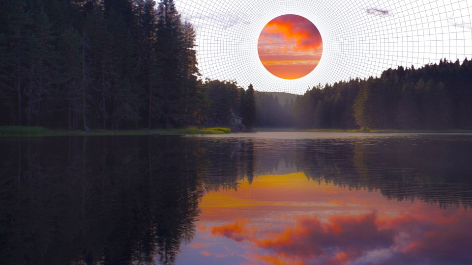
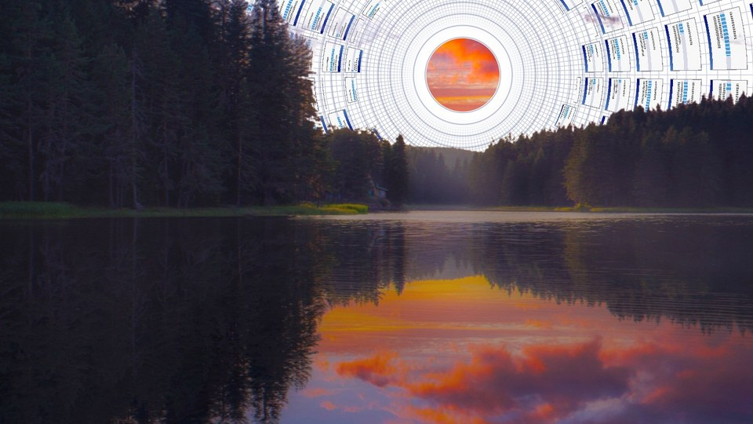
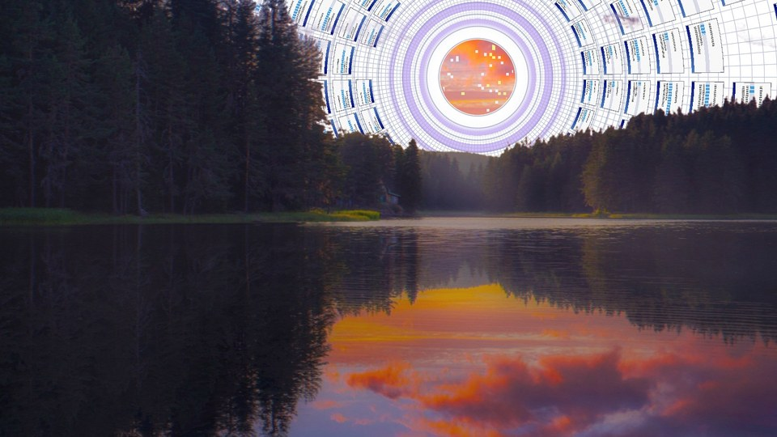
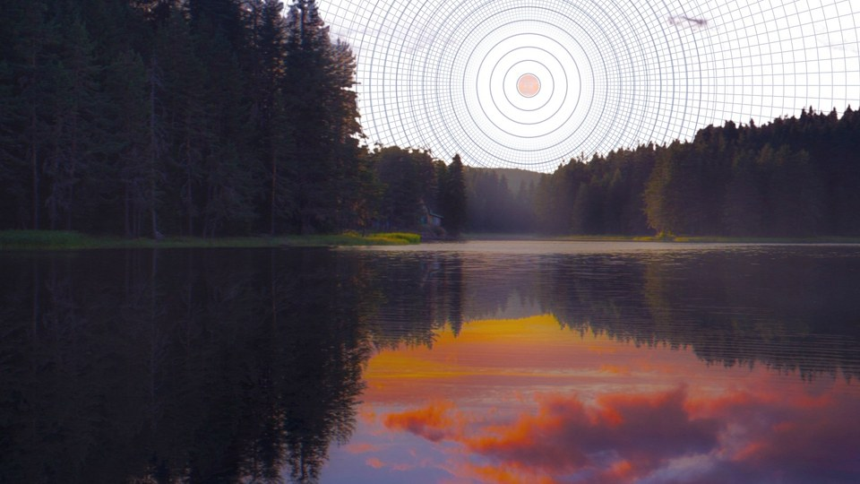
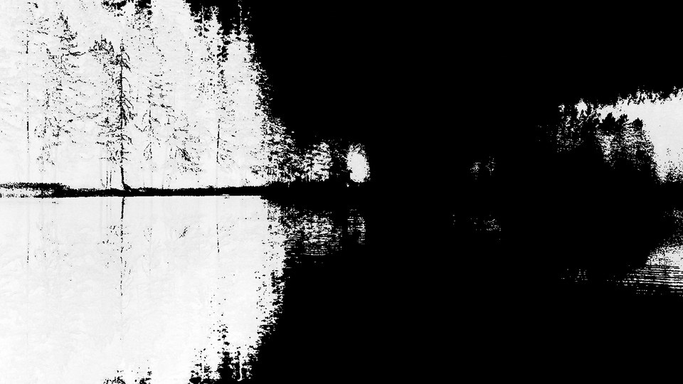
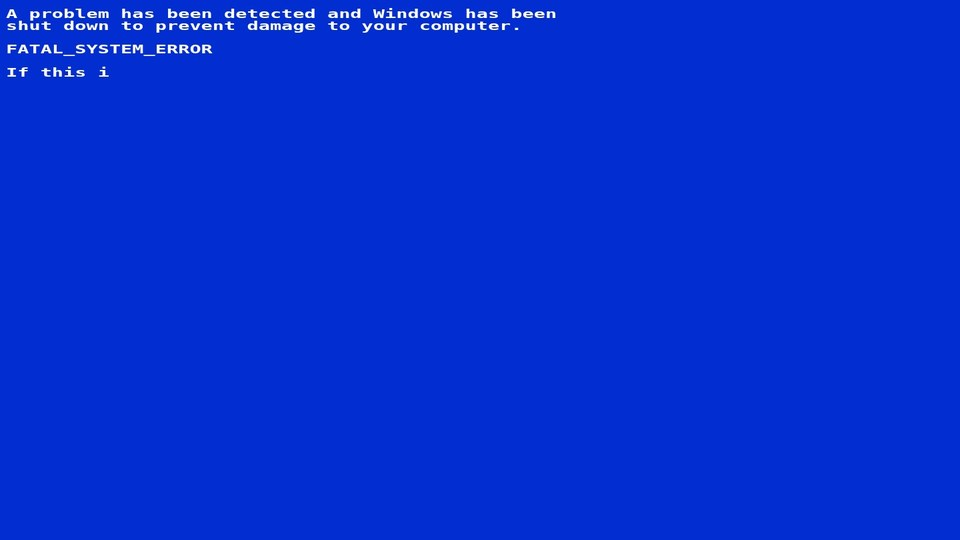
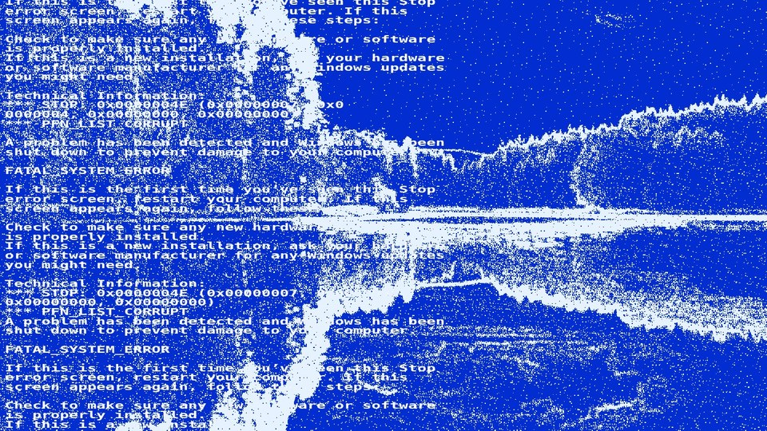

It finds the sky
A colour and connectivity analysis separates sky from everything else, then fits the largest circle into it. That circle is where the effect is centred.
boot-effect is a procedural intro for any photograph. It finds the sky, grows a polar grid out of it, and cuts to a crash screen. One image, one WebGL shader, no dependencies.
Nothing is pre-rendered. The picture you give it is analysed in the browser, and every frame is drawn by a single fragment shader.

A colour and connectivity analysis separates sky from everything else, then fits the largest circle into it. That circle is where the effect is centred.

A logarithmic polar grid replaces the sky, tiles of dialog windows appear on it, and a small disc of the original photograph holds out in the middle until it collapses.

A hard black and white cut, a mosaic, then a blue stop screen that types itself out while speckle drawn from the photo's own edges flickers over it.
Each frame links to the playground, paused on exactly that frame.

FRAME 040The disc closes in. Everything outside it becomes paper.
FRAME 090Dialog windows tile the grid. FRAME 130A glow gathers around the disc.
FRAME 152Violet rings, sparks inside the disc.
FRAME 190The disc collapses to a point.
FRAME 205A hard black and white cut.
FRAME 212The stop screen types itself out. FRAME 217A tinted ghost of the photo under the blue.
FRAME 244Speckle that follows the photo's edges.Drop in the script, point it at a photograph, done. The library creates its own canvas, sizes it to the box, and picks 16:9 or 9:16 from the window.
Read the docs or tune the effect live and copy the options.
<div id="intro"></div> <script src="boot-effect.js"></script> <script> new BootEffect("#intro", { photo: "sunset.jpg", sky: { mode: "warm", horizon: 0.49 } }); </script>
npm install boot-effect
Three rules cover most photographs. blue keys on colour, haze looks for bright, smooth regions such as fog and overcast, and warm handles sunrise, sunset and dusk, where the sky is orange, pink and violet.
The warm rule only keeps sky that connects to the top edge and sits above a horizon you can set, which is how a mirrored reflection stays out of the mask. How the analysis works.
The playground runs entirely in your browser. Pick a file, choose the sky rule, drag the horizon, and copy the options that worked.